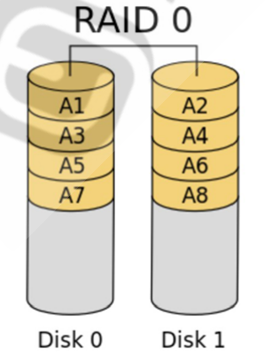
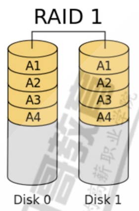
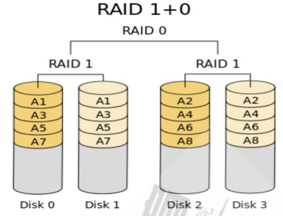
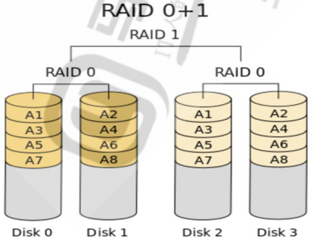
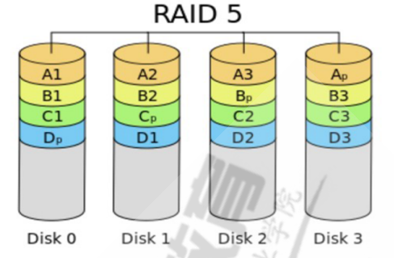
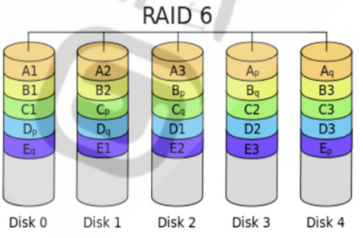
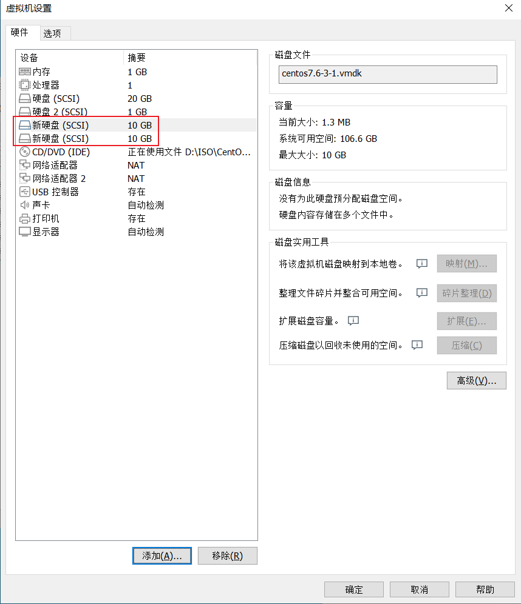
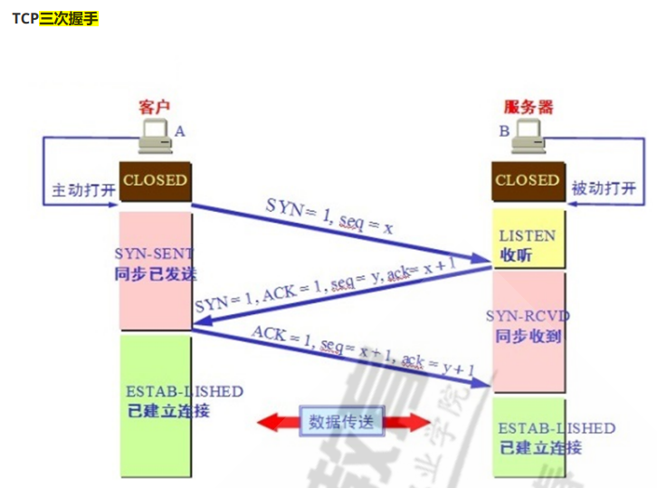
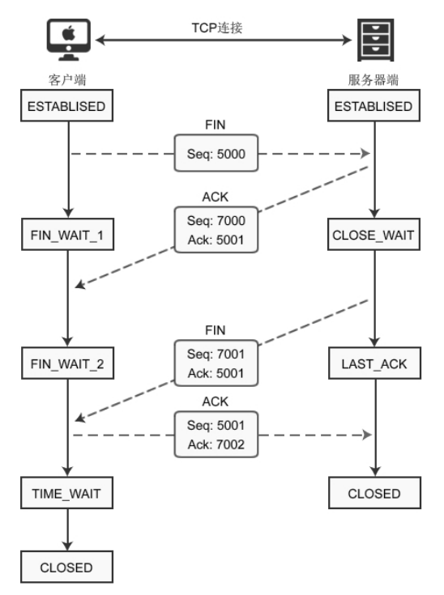
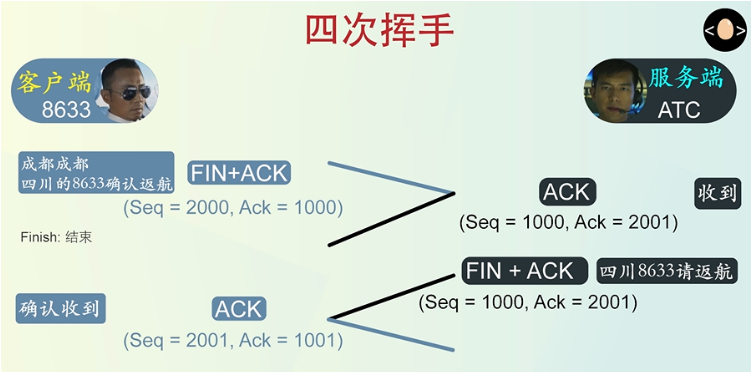

背景 ：报全程班和单就业的小伙伴，本周建议学习内容：第十一天、第十二天、第十三天 、第十四天。
请同学们完成作业后，将博客作业提交到此链接：https://www.wjx.top/vj/POHTQOH.aspx。
章节内容 第十一天：
作业： 1、图文并茂说明raid0,raid1, raid10, raid01, raid5等原理。 独立硬盘冗余阵列（RAID, Redundant Array of Independent Disks），旧称廉价磁盘冗余阵列 （Redundant Array of Inexpensive Disks），简称磁盘阵列。利用虚拟化存储技术把多个硬盘组合起 来，成为一个或多个硬盘阵列组，目的为提升性能或数据冗余，或是两者同时提升。
RAID功能实现：1、 提高IO能力，磁盘并行读写 ；2、提高耐用性，磁盘冗余算法来实现。
（1）raid0, 条带集
以 chunk 单位,读写数据,因为读写时都可以并行处理，所以在所有的级别中，RAID 0的速度是最快的。 但是RAID 0既没有冗余功能，也不具备容错能力，如果一个磁盘（物理）损坏，所有数据都会丢失 .
磁盘利用率：100%
优点：读写速度快
缺点：不容错
硬盘个数：2+

（2）raid1, 镜像集
也称为镜像, 两组以上的N个磁盘相互作镜像，在一些多线程操作系统中能有很好的读取速度，理论上读 取速度等于硬盘数量的倍数，与RAID 0相同。另外写入速度有微小的降低。
磁盘利用率：50%
优点：读写速率一般，容错
硬盘个数：2

（3）raid10, 先镜像后条带（RAID1的安全+RAID0的高速）
磁盘利用率：50%
优点：读写速率快，容错
硬盘个数：4

（4）raid01, 先条带后镜像

（5）raid5 ，带奇偶校验的条带集
磁盘利用率：(n-1)/n
优点：读写速率快，容错，允许坏一块硬盘
硬盘个数：3,3+

（6）raid6，带奇偶校验的条带集（双份校验位,算法更复杂 ）
磁盘利用率：(n-2)/n
优点：读写速率快，容错，允许坏两块硬盘
硬盘个数：4,4+

2、创建一个至少有两个PV组成的大小为20G的名为testvg的VG，要求PE大小为16M，而后在卷组中创建大小为5G的逻辑卷testlv;挂载至/users目录 （1）添加硬盘

（2）此时系统还没有识别到新增加的硬盘 ，需要使用命令进行扫描硬盘
1 2 3 4 5 6 7 8 9 10 11 12 13 14 15 16 17 [root@node1 test] 1 root disk 8, 0 Jun 19 07:45 /dev/sda 1 root disk 8, 1 Jun 19 07:45 /dev/sda1 1 root disk 8, 2 Jun 19 07:45 /dev/sda2 1 root disk 8, 16 Jun 19 07:45 /dev/sdb 1 root disk 8, 32 Jun 20 10:16 /dev/sdc 0 20G 0 disk 0 1G 0 part /boot 0 19G 0 part 0 17G 0 lvm / 0 2G 0 lvm [SWAP] 0 2G 0 disk 0 18G 0 disk 1 4.4G 0 rom
（3）创建PV
1 2 3 4 5 6 7 8 9 10 11 12 13 14 15 16 17 18 19 20 21 22 23 24 25 26 27 28 29 30 31 32 33 34 35 36 37 38 39 40 41 42 43 44 45 46 47 [root@node1 test]# pvcreate /dev/sdb "/dev/sdb" successfully created."/dev/sdc" successfully created.Name /dev/sda2Name centosSize <19.00 GiB / not usable 3.00 MiBAllocatable yes (but full)Size 4.00 MiB4863 Free PE 0 Allocated PE 4863 "/dev/sdb" is a new physical volume of "2.00 GiB" Name /dev/sdbName Size 2.00 GiBAllocatable NOSize 0 0 Free PE 0 Allocated PE 0 "/dev/sdc" is a new physical volume of "18.00 GiB" Name /dev/sdcName Size 18.00 GiBAllocatable NOSize 0 0 Free PE 0 Allocated PE 0 6 S9b-i7ts-sJmG-GOz45sFmt Attr PSize PFree 19.00 g 0 2.00 g 2.00 g18.00 g 18.00 g
（4）创建VG
1 2 3 4 5 6 7 8 9 10 11 12 13 14 15 16 17 18 19 20 21 22 23 24 25 26 27 28 29 30 31 32 33 34 35 36 37 38 39 40 41 42 43 44 45 46 47 48 49 50 [root@node1 test]# vgcreate -s 16 M testvg /dev/sdb /dev/sdcgroup "testvg" successfully created1 2 0 wz2 0 0 wzName centosSystem ID Format lvm21 Sequence No 3 Access read /write 0 2 Open LV 2 0 1 1 19.00 GiB4.00 MiB4863 4863 / <19.00 GiB0 / 0 UUID 9 KnTtD-88 ve-B3cy-Ftc7-TplO-oVwc-5 SfeZhName testvgSystem ID Format lvm22 Sequence No 1 Access read /write 0 0 Open LV 0 0 2 2 19.97 GiB16.00 MiB1278 0 / 0 1278 / <19.97 GiBUUID Jp1YqS-l0O0-vboZ-eLyu-4 w4M-pAGj-USbKEU
（5）创建LV
1 2 3 4 5 6 7 8 9 10 11 12 13 14 15 16 17 18 19 20 21 22 23 24 25 26 27 28 29 30 31 32 33 34 35 36 37 38 39 40 41 42 43 44 45 46 47 48 49 50 51 52 53 54 55 56 57 58 59 60 [root@node1 test]# lvcreate -L 5 G -n testlv testvgMove Log Cpy%Sync ConvertPath /dev/centos/swapName swapName centosUUID 4 mNwDD-vOdz-y4WI-9 FlR-FufL-bt5c-Kh6gOqWrite Access read /write time localhost, 2021 -08 -08 15 :12 :57 -0400 open 2 2.00 GiBCurrent LE 512 1 inherit Read ahead sectors autoset to 256 253 :1 Path /dev/centos/rootName rootName centosUUID 8 O7iWh-vgrE-dDPW-3 f6S-ofbX-pZPK-Eed0tVWrite Access read /write time localhost, 2021 -08 -08 15 :12 :57 -0400 open 1 17.00 GiBCurrent LE 4351 1 inherit Read ahead sectors autoset to 256 253 :0 Path /dev/testvg/testlvName testlvName testvgUUID xXdpZU-KAj3-1 MGn-HVeO-lVWh-3 wTQ-10 x2b1Write Access read /write time node1, 2022 -06 -20 10 :30 :33 -0400 open 0 5.00 GiBCurrent LE 320 1 inherit Read ahead sectors autoset to 256 253 :2
（6）格式化并挂载文件系统
1 2 3 4 5 6 7 8 9 10 11 12 13 14 15 16 17 18 19 20 21 22 23 24 25 26 27 28 29 30 31 32 33 34 35 36 37 38 39 40 41 42 43 44 45 46 47 48 49 50 51 52 53 54 55 56 57 58 59 60 61 62 63 64 65 66 67 68 69 70 [root@node1 test] 0 20G 0 disk 0 1G 0 part /boot 0 19G 0 part 0 17G 0 lvm / 0 2G 0 lvm [SWAP] 0 2G 0 disk 0 18G 0 disk 0 5G 0 lvm 1 4.4G 0 rom 0 475M 0% /dev 0 487M 0% /dev/shm 0 487M 0% /sys/fs/cgroup 0 98M 0% /run/user/0 1 root root 7 Jun 20 10:30 /dev/testvg/testlv -> ../dm-2 1310720 blocks 32768 fragments per group 0 20G 0 disk 0 1G 0 part /boot 0 19G 0 part 0 17G 0 lvm / 0 2G 0 lvm [SWAP] 0 2G 0 disk 0 18G 0 disk 0 5G 0 lvm 1 4.4G 0 rom 0 475M 0% /dev 0 487M 0% /dev/shm 0 487M 0% /sys/fs/cgroup 0 98M 0% /run/user/0
3、新建用户archlinux,要求其家目录为/users/archlinux，而后su切换至archlinux用户，复制/etc/pam.d/目录至自己的家目录。 （1）新建用户
1 2 3 4 5 6 7 8 [root@node1 test]@node1 test]1000 (archlinux) gid=1000 (archlinux) groups=1000 (archlinux)@node1 test]archlinux: x: 1000 : 1000 : :/users/archlinux :/bin/bash @node1 test]@node1 test]2 archlinux archlinux 4096 Jun 20 10 : 41 /users/archlinux/
（2）复制/etc/pam.d/目录至自己的家目录。
1 2 3 4 5 6 7 8 9 10 11 12 13 14 15 16 17 18 19 20 21 22 23 24 25 26 27 28 29 30 31 32 33 34 35 36 37 38 39 [archlinux@node1 ~]$ echo $HOME 2 archlinux archlinux 4096 Aug 8 2021 pam.d 1 archlinux archlinux 192 Sep 30 2020 chfn 1 archlinux archlinux 192 Sep 30 2020 chsh 1 archlinux archlinux 232 Mar 31 2020 config-util 1 archlinux archlinux 287 Aug 8 2019 crond 1 archlinux archlinux 19 Aug 8 2021 fingerprint-auth -> fingerprint-auth-ac 1 archlinux archlinux 702 Aug 8 2021 fingerprint-auth-ac 1 archlinux archlinux 796 Sep 30 2020 login 1 archlinux archlinux 154 Mar 31 2020 other 1 archlinux archlinux 188 Mar 31 2020 passwd 1 archlinux archlinux 16 Aug 8 2021 password-auth -> password-auth-ac 1 archlinux archlinux 1033 Aug 8 2021 password-auth-ac 1 archlinux archlinux 155 Apr 1 2020 polkit-1 1 archlinux archlinux 12 Aug 8 2021 postlogin -> postlogin-ac 1 archlinux archlinux 330 Aug 8 2021 postlogin-ac 1 archlinux archlinux 681 Sep 30 2020 remote 1 archlinux archlinux 143 Sep 30 2020 runuser 1 archlinux archlinux 138 Sep 30 2020 runuser-l 1 archlinux archlinux 17 Aug 8 2021 smartcard-auth -> smartcard-auth-ac 1 archlinux archlinux 752 Aug 8 2021 smartcard-auth-ac 1 archlinux archlinux 25 Aug 8 2021 smtp -> /etc/alternatives/mta-pam 1 archlinux archlinux 76 Apr 1 2020 smtp.postfix 1 archlinux archlinux 904 Aug 8 2019 sshd 1 archlinux archlinux 540 Sep 30 2020 su 1 archlinux archlinux 200 Sep 30 2020 sudo 1 archlinux archlinux 178 Sep 30 2020 sudo-i 1 archlinux archlinux 137 Sep 30 2020 su-l 1 archlinux archlinux 14 Aug 8 2021 system-auth -> system-auth-ac 1 archlinux archlinux 1031 Aug 8 2021 system-auth-ac 1 archlinux archlinux 129 Oct 1 2020 systemd-user 1 archlinux archlinux 84 Oct 30 2018 vlock 1 archlinux archlinux 278 Oct 1 2020 vmtoolsd
4、扩展testlv至7G，要求archlinux用户的文件不能丢失 （1）在线扩展逻辑卷至7G
1 2 3 4 5 6 7 8 9 10 11 12 13 14 15 16 17 18 19 20 21 22 23 24 25 26 27 28 29 30 31 32 33 34 35 36 [root@node1 ~] 0 20G 0 disk 0 1G 0 part /boot 0 19G 0 part 0 17G 0 lvm / 0 2G 0 lvm [SWAP] 0 2G 0 disk 0 18G 0 disk 0 7G 0 lvm /users 1 4.4G 0 rom 0 475M 0% /dev 0 487M 0% /dev/shm 0 487M 0% /sys/fs/cgroup 0 98M 0% /run/user/0
（2）扩展文件系统
1 2 3 4 5 6 7 8 9 10 11 12 13 14 15 16 17 18 19 20 21 22 23 24 25 26 27 28 29 30 31 32 33 34 35 36 37 38 39 40 41 42 43 44 45 46 47 48 49 50 [root@node1 ~] 1835008 blocks long. 0 475M 0% /dev 0 487M 0% /dev/shm 0 487M 0% /sys/fs/cgroup 0 98M 0% /run/user/0 1 archlinux archlinux 192 Sep 30 2020 chfn 1 archlinux archlinux 192 Sep 30 2020 chsh 1 archlinux archlinux 232 Mar 31 2020 config-util 1 archlinux archlinux 287 Aug 8 2019 crond 1 archlinux archlinux 19 Aug 8 2021 fingerprint-auth -> fingerprint-auth-ac 1 archlinux archlinux 702 Aug 8 2021 fingerprint-auth-ac 1 archlinux archlinux 796 Sep 30 2020 login 1 archlinux archlinux 154 Mar 31 2020 other 1 archlinux archlinux 188 Mar 31 2020 passwd 1 archlinux archlinux 16 Aug 8 2021 password-auth -> password-auth-ac 1 archlinux archlinux 1033 Aug 8 2021 password-auth-ac 1 archlinux archlinux 155 Apr 1 2020 polkit-1 1 archlinux archlinux 12 Aug 8 2021 postlogin -> postlogin-ac 1 archlinux archlinux 330 Aug 8 2021 postlogin-ac 1 archlinux archlinux 681 Sep 30 2020 remote 1 archlinux archlinux 143 Sep 30 2020 runuser 1 archlinux archlinux 138 Sep 30 2020 runuser-l 1 archlinux archlinux 17 Aug 8 2021 smartcard-auth -> smartcard-auth-ac 1 archlinux archlinux 752 Aug 8 2021 smartcard-auth-ac 1 archlinux archlinux 25 Aug 8 2021 smtp -> /etc/alternatives/mta-pam 1 archlinux archlinux 76 Apr 1 2020 smtp.postfix 1 archlinux archlinux 904 Aug 8 2019 sshd 1 archlinux archlinux 540 Sep 30 2020 su 1 archlinux archlinux 200 Sep 30 2020 sudo 1 archlinux archlinux 178 Sep 30 2020 sudo-i 1 archlinux archlinux 137 Sep 30 2020 su-l 1 archlinux archlinux 14 Aug 8 2021 system-auth -> system-auth-ac 1 archlinux archlinux 1031 Aug 8 2021 system-auth-ac 1 archlinux archlinux 129 Oct 1 2020 systemd-user 1 archlinux archlinux 84 Oct 30 2018 vlock 1 archlinux archlinux 278 Oct 1 2020 vmtoolsd
5、收缩testlv至3G，要求archlinux用户的文件不能丢失 注意：缩减有数据损坏的风险，建议先备份再缩减，xfs文件系统不支持缩减
（1）备份数据
1 2 3 4 5 6 7 8 9 10 11 12 13 14 15 16 17 18 19 20 21 22 23 24 25 26 27 28 29 30 31 32 33 34 35 36 37 38 39 40 41 42 43 44 45 [root@node1 ~]--r-- 1 root root 40960 Jun 20 11:14 /tmp/user.tar .bashrc .bash_logout .bash_profile
（2）卸载要缩容的逻辑卷上的文件系统
1 2 3 4 5 6 7 8 9 10 11 12 13 14 15 16 17 18 19 20 21 [root@node1 ~]475 M 0 475 M 0 % /dev487 M 0 487 M 0 % /dev/ shm487 M 7.8 M 479 M 2 % /run487 M 0 487 M 0 % /sys/ fs/cgroup/dev/m apper/centos-root 17G 1.3G 16G 8% / /dev/ sda1 1014 M 138 M 877 M 14 % /boot98 M 0 98 M 0 % /run/u ser/0 /dev/m apper/testvg-testlv 6.8G 23M 6.4G 1% /u sers8 ) or fuser(1 ))8 ) or fuser(1 ))
（3）
1 2 3 4 5 6 7 8 9 10 11 12 13 [root@node1 ~]# umount /users/ Size Used Avail Use% Mounted on475 M 0 475 M 0 % /dev487 M 0 487 M 0 % /dev/ shm487 M 7.8 M 479 M 2 % /run487 M 0 487 M 0 % /sys/ fs/cgroup/dev/m apper/centos-root 17G 1.3G 16G 8% / /dev/ sda1 1014 M 138 M 877 M 14 % /boot98 M 0 98 M 0 % /run/u ser/0 /dev/ testvg/testlv 3 G1.42 .9 (28 -Dec-2013 )'e2fsck -f /dev/testvg/testlv' first.
（4）
1 2 3 4 5 6 7 8 9 10 11 12 13 14 15 16 17 18 19 20 21 22 23 24 25 26 27 28 29 30 31 32 33 34 35 36 37 38 39 40 41 42 43 44 45 46 47 48 49 50 51 52 53 54 55 56 57 58 59 60 61 62 63 64 65 66 67 [root@node1 ~]2.23 .2 1.42 .9 (28 -Dec-2013 )1 : Checking inodes, blocks, and sizes2 : Checking directory structure3 : Checking directory connectivity4 : Checking reference counts5 : Checking group summary information/dev/m apper/testvg-testlv: 47/ 458752 files (0.0 % non-contiguous), 67357 /1835008 blocks1.42 .9 (28 -Dec-2013 )/dev/ testvg/testlv to 786432 (4 k) blocks./dev/ testvg/testlv is now 786432 blocks long.17.00 g 2.00 g 7.00 g 475 M 0 475 M 0 % /dev487 M 0 487 M 0 % /dev/ shm487 M 7.8 M 479 M 2 % /run487 M 0 487 M 0 % /sys/ fs/cgroup/dev/m apper/centos-root 17G 1.3G 16G 8% / /dev/ sda1 1014 M 138 M 877 M 14 % /boot98 M 0 98 M 0 % /run/u ser/0 /dev/m apper/centos-root / xfs defaults 0 0 611 d-44 bb-8228 -bcd7e1a43333 /boot xfs defaults 0 0 /dev/m apper/centos-swap swap swap defaults 0 0 /dev/m apper/centos-root / xfs defaults 0 0 611 d-44 bb-8228 -bcd7e1a43333 /boot xfs defaults 0 0 /dev/m apper/centos-swap swap swap defaults 0 0 /dev/ testvg/testlv /u sers/ ext4 defaults 0 0 475 M 0 475 M 0 % /dev487 M 0 487 M 0 % /dev/ shm487 M 7.8 M 479 M 2 % /run487 M 0 487 M 0 % /sys/ fs/cgroup/dev/m apper/centos-root 17G 1.3G 16G 8% / /dev/ sda1 1014 M 138 M 877 M 14 % /boot98 M 0 98 M 0 % /run/u ser/0 /dev/m apper/testvg-testlv 2.9G 16M 2.7G 1% /u sers
（5）
1 2 3 4 5 6 7 8 9 10 11 12 13 14 15 16 17 18 19 20 21 22 23 [root@node1 ~]@node1 ~]WARNING: Reducing active logical volume to 3.00 GiB.of logical volume testvg/testlv changed from 7.00 GiB (448 extents) to 3.00 GiB (192 extents).@node1 ~]17.00 g 2.00 g 3.00 g @node1 ~]@node1 ~]475 M 0 475 M 0 % /dev tmpfs 487M 0 487M 0% /dev /shm tmpfs 487M 7.8M 479M 2% /run 487 M 0 487 M 0 % /sys/fs /cgroup /dev /mapper/centos -root 17 G 1.3 G 16 G 8 % / /dev /sda1 1014M 138M 877M 14% /boot 98 M 0 98 M 0 % /run/user /0 /dev /mapper/testvg -testlv 2.9 G 16 M 2.7 G 1 % /users
6、对testlv创建快照，并尝试基于快照备份数据，验正快照的功能 （1）为现有逻辑卷/dev/testvg/testlv 创建快照
1 2 3 4 5 6 7 8 9 10 11 12 13 14 15 16 17 18 19 20 [root@node1 ~]# lvcreate -l 64 -s -n user -snapshot -p r /dev/testvg/testlv Move Log Cpy%Sync Convertuser -snapshot testvg sri-a-sUUID ="1db19aff-18f0-42d5-88d2-0f4ea074d33f" TYPE ="ext4" UUID ="f7d6f590-611d-44bb-8228-bcd7e1a43333" TYPE ="xfs" UUID ="Pcy8Mo-duHv-KVJI-NGLy-CCln-pDEl-zUOaPV" TYPE ="LVM2_member" UUID ="sCiC1O-wM9v-ecWQ-Knx3-JCEx-jX4E-rLTmQ1" TYPE ="LVM2_member" UUID ="2020-11-04-11-36-43-00" LABEL="CentOS 7 x86_64" TYPE ="iso9660" PTTYPE="dos" UUID ="dsIn9M-LD1O-jD8R-6S9b-i7ts-sJmG-GOz45s" TYPE ="LVM2_member" UUID ="21bd96c2-bd2c-4649-b5b0-fbb11870671c" TYPE ="xfs" UUID ="f0fb2d3e-4915-4353-8ef4-decf20ea52a3" TYPE ="swap" user
1 2 3 4 5 6 7 8 9 10 11 12 13 14 15 16 17 18 19 20 21 22 23 24 25 26 27 28 29 30 31 32 33 34 35 36 37 38 39 40 41 42 43 44 45 46 47 48 49 50 [root@node1 ~]# lvdisplayPath /dev/testvg/testlvName testlvName testvgUUID xXdpZU-KAj3-1 MGn-HVeO-lVWh-3 wTQ-10 x2b1Write Access read /write time node1, 2022 -06 -20 10 :30 :33 -0400 snapshot status source of user -snapshot [active]open 1 3.00 GiBCurrent LE 192 1 inherit Read ahead sectors autoset to 256 253 :2 Path /dev/testvg/user -snapshot Name user -snapshot Name testvgUUID DZzugm-ieN6-yNca-eigO-NSFF-uu6O-L09uqfWrite Access read only time node1, 2022 -06 -21 10 :39 :26 -0400 snapshot status active destination for testlvopen 0 3.00 GiBCurrent LE 192 table size 1.00 GiBtable LE 64 to snapshot 0.01 %Snapshot chunk size 4.00 KiB1 inherit Read ahead sectors autoset to 256 253 :5 20 1. txt1. txt’: Read -only file system
（2）挂载快照
xfs注意要使用-o ro实现只读,访止快照被修改
1 2 3 4 5 6 7 8 9 10 11 12 13 14 15 16 17 18 19 20 21 22 23 24 25 26 27 28 29 30 [root@node1 ~]/dev/m apper/testvg-user--snapshot is write-protected, mounting read-only475 M 0 475 M 0 % /dev487 M 0 487 M 0 % /dev/ shm487 M 7.8 M 479 M 2 % /run487 M 0 487 M 0 % /sys/ fs/cgroup/dev/m apper/centos-root 17G 1.3G 16G 8% / /dev/ sda1 1014 M 138 M 877 M 14 % /boot98 M 0 98 M 0 % /run/u ser/0 /dev/m apper/testvg-testlv 2.9G 16M 2.7G 1% /u sers/dev/m apper/testvg-user--snapshot 2.9G 16M 2.7G 1% /m nt/snap20 3 archlinux archlinux 4096 Jun 20 10 :45 archlinux2 root root 16384 Jun 20 10 :35 lost+found475 M 0 475 M 0 % /dev487 M 0 487 M 0 % /dev/ shm487 M 7.8 M 479 M 2 % /run487 M 0 487 M 0 % /sys/ fs/cgroup/dev/m apper/centos-root 17G 1.3G 16G 8% / /dev/ sda1 1014 M 138 M 877 M 14 % /boot98 M 0 98 M 0 % /run/u ser/0 /dev/m apper/testvg-testlv 2.9G 16M 2.7G 1% /u sers/dev/m apper/testvg-user--snapshot 2.9G 16M 2.7G 1% /m nt/snap 快照显示的文件大小跟
（3）验证快照的功能
对原来的逻辑卷进行修改
1 2 3 4 5 6 7 8 9 10 11 12 13 14 15 16 17 [root@node1 ~] 2 archlinux archlinux 4096 Aug 8 2021 pam.d 1 root root 0 Jun 21 22:36 file1.txt 2 archlinux archlinux 4096 Aug 8 2021 pum.d 2 archlinux archlinux 4096 Aug 8 2021 pam.d
利用快照还原原来的逻辑卷
1 2 3 4 5 6 7 8 9 10 11 12 13 14 15 16 17 18 19 20 21 22 23 24 25 26 27 28 29 30 31 [root@node1 snap]475 M 0 475 M 0 % /dev487 M 0 487 M 0 % /dev/ shm487 M 7.8 M 479 M 2 % /run487 M 0 487 M 0 % /sys/ fs/cgroup/dev/m apper/centos-root 17G 1.3G 16G 8% / /dev/ sda1 1014 M 138 M 877 M 14 % /boot98 M 0 98 M 0 % /run/u ser/0 /dev/m apper/testvg-testlv 2.9G 16M 2.7G 1% /u sers/dev/m apper/testvg-user--snapshot 2.9G 16M 2.7G 1% /m nt/snap8 ) or fuser(1 ))/mnt/ snap: target is busy.8 ) or fuser(1 ))/]# umount /m nt/snap/ 475 M 0 475 M 0 % /dev487 M 0 487 M 0 % /dev/ shm487 M 7.8 M 479 M 2 % /run487 M 0 487 M 0 % /sys/ fs/cgroup/dev/m apper/centos-root 17G 1.3G 16G 8% / /dev/ sda1 1014 M 138 M 877 M 14 % /boot98 M 0 98 M 0 % /run/u ser/0
1 2 3 4 5 6 7 8 9 10 11 12 13 14 15 16 17 18 19 [root@node1 /]# lvconvert --merge / dev/testvg/u ser-snapshot 100.00 %17.00 g 2.00 g 3.00 g /]# mount / dev/testvg/ testlv /users/ /]# ll /u sers/20 3 archlinux archlinux 4096 Jun 20 10 :45 archlinux2 root root 16384 Jun 20 10 :35 lost+found/]# ll /u sers/archlinux/ // 已还原到原来的样子4 2 archlinux archlinux 4096 Aug 8 2021 pam.d
7、创建10G的RAID1，要求CHUNK为128K，文件系统为ext4，有一个空闲盘，开机可自动挂载至/backup目录 （1）、使用VMware添加两块大小均为10G的硬盘，然后在linux使用命令扫描新添加的硬盘。
（2）、创建RAID1，
1 mdadm -C /dev/m d0 -a yes -l 1 -n 2 -x 1 -c 128 K /dev/ sdb /dev/ sdc
（3）、格式化磁盘，并挂载文件系统
1 2 3 4 5 6 7 8 9 10 11 12 13 14 [root@localhost ~]mkfs.ext4 /dev/m d0/dev/m apper/centos-root / xfs defaults 0 0 47 e57ec3-dc25-40 b5-a567-619 b8697712f /boot xfs defaults 0 0 /dev/m d0 /backup defaults 0 0
8、创建一个可用空间为10G的RAID10设备，要求CHUNK为256K，文件系统为ext4，开机可自动挂载至/mydata目录 （1）、使用VMware添加四块大小均为5G的硬盘，然后在linux使用命令扫描新添加的硬盘。
1 2 3 4 5 6 7 8 9 [root@localhost ~] 1 root disk 8, 0 Jun 28 12:38 /dev/sda 1 root disk 8, 1 Jun 28 12:38 /dev/sda1 1 root disk 8, 2 Jun 28 12:38 /dev/sda2 1 root disk 8, 16 Jun 28 13:03 /dev/sdb 1 root disk 8, 32 Jun 28 13:03 /dev/sdc 1 root disk 8, 48 Jun 28 13:03 /dev/sdd 1 root disk 8, 64 Jun 28 13:03 /dev/sde
（2）、创建raid10
1 2 3 4 5 6 7 8 9 10 11 12 13 14 15 16 17 18 19 20 21 22 23 24 25 26 27 28 29 30 31 32 33 34 35 36 37 38 39 40 41 42 43 44 45 46 47 48 49 50 51 52 53 54 [root@localhost ~] 28 13:07:56 2022 10475520 (9.99 GiB 10.73 GB) 5237760 (5.00 GiB 5.36 GB) 28 13:08:10 2022 0 8 16 0 active sync set-A /dev/sdb 1 8 32 1 active sync set-B /dev/sdc 2 8 48 2 active sync set-A /dev/sdd 3 8 64 3 active sync set-B /dev/sde 0 20G 0 disk 0 1G 0 part /boot 0 19G 0 part 0 17G 0 lvm / 0 2G 0 lvm [SWAP] 0 5G 0 disk 0 10G 0 raid10 0 5G 0 disk 0 10G 0 raid10 0 5G 0 disk 0 10G 0 raid10 0 5G 0 disk 0 10G 0 raid10 1 1024M 0 rom
（3）、格式化磁盘，并挂载文件系统
1 2 3 4 5 6 7 8 9 10 11 12 13 14 15 16 17 18 19 20 21 22 23 24 25 26 27 28 29 30 31 32 33 34 35 36 37 38 39 40 41 42 43 44 45 46 47 48 49 [root@localhost ~]type : Linuxlog =2)log =2)for the super usergroups done done done done
9、静态配置网卡IP，centos/ubuntu实现 1 2 3 4 5 6 7 8 9 10 11 12 13 14 15 16 17 18 [root@localhost network-scripts]# cat /etc/sysconfig/network-scripts/ifcfg-ens37TYPE =EthernetBOOTPROTO =staticNAME =ens37DEVICE =ens37ONBOOT =yes IPADDR =192.168.23.101NETMASK =255.255.255.0GATEWAY =192.168.23.254
10、图文并茂解释TCP/IP 3次握手4次断开。 (1) TCP/IP的三次握手：

用川航举例子
①四川8633请求建立连接(SYN)，并且发送出序号。
小结 ：三次握手的关键是要确认对方收到了自己的数据包，这个目标就是通过“确认号（Ack）”字段实现的。计算机会记录下自己发送的数据包序号Seq，待收到对方的数据包后，检测“确认号（Ack）”字段，看Ack = Seq + 1是否成立，如果成立说明对方正确收到了自己的数据包。
如果只有两次握手 这个时候客户端没有回应，这样会浪费服务端的资源
为什么需要第三次通信 ？
1、在第一次通信过程中，A向B发送信息之后，B收到信息后可以确认自己的收信能力和A的发信能力没有问题。
————————————————https://blog.csdn.net/weixin_45393094/article/details/104965561
(2) TCP/IP的四次挥手：
建立连接非常重要，它是数据正确传输的前提；断开连接同样重要，它让计算机释放不再使用的资源。如果连接不能正常断开，不仅会造成数据传输错误，还会导致套接字不能关闭，持续占用资源，如果并发量高，服务器压力堪忧。
第一次挥手：Clien发送一个FIN，用来关闭Client到Server的数据传送，Client进入FIN_WAIT_1状态。

川航图举例
①客户端申请断开连接即FIN （我这边准备断开连接了）

数据传输完毕后，双方都可释放连接。最开始的时候，客户端和服务器都是处于ESTABLISHED状态，然后客户端主动关闭，服务器被动关闭。
为什么连接的时候是三次握手，关闭的时候却是四次握手？
①因为当Server端收到Client端的SYN连接请求报文后，可以直接发送SYN+ACK报文。其中ACK报文是用来应答的，SYN报文是用来同步的。
补充问题
📝TCP的三次握手一定能保证传输可靠吗？ 不能三次握手比两次更可靠，但也不是完全可靠，而追加更多次握手也不能使连接更可靠了。因此选择了三次握手。
世界上不存在完全可靠的通信协议。从通信时间成本空间成本以及可靠度来讲，选择了“三次握手”作为点对点通信的一般规则
————————————————https://blog.csdn.net/weixin_45393094/article/details/104965561
11、网卡绑定bond0的实现 bond聚合链路模式共7种模式：0-6 Mode
mod=0 ，即：(balance-rr) Round-robin policy（轮询）聚合口数据报文按包轮询从物理接口转 发。
说明：
1 2 3 4 5 6 常用的模式为 0,1,3,6 1 、5 、6 不需要交换机设置0、2、3、4 需要交换机设置0 、2 和 3 中使用 EtherChannel，但在模4 中需要 LACP和 EtherChannel
1 2 3 4 5 6 7 8 9 10 11 12 13 14 15 16 17 18 19 20 21 22 23 24 25 26 27 28 29 30 31 32 33 34 35 36 37 38 39 40 41 42 43 44 45 46 47 48 49 50 51 52 53 54 55 56 57 58 59 60 61 62 63 64 65 66 [root@localhost network-scripts]# nmcli conne TYPE DEVICE ethernet ens33 ethernet ens37 TYPE DEVICE ethernet ens33 ethernet ens37 connection add con-name mybond0 ifname bond0 type bond mode active-backup ipv4.method manual ipv4.address 192.168.23.101/24Connection 'mybond0' (69f8a919-2ef4-4c69-816d-9c401cc67425) successfully added.BONDING_OPTS =mode=active-backupTYPE =BondBONDING_MASTER =yes PROXY_METHOD =noneBROWSER_ONLY =no BOOTPROTO =noneIPADDR =192.168.23.101PREFIX =24DEFROUTE =yes IPV4_FAILURE_FATAL =no IPV6INIT =yes IPV6_AUTOCONF =yes IPV6_DEFROUTE =yes IPV6_FAILURE_FATAL =no IPV6_ADDR_GEN_MODE =stable-privacyNAME =mybond0UUID =69f8a919-2ef4-4c69-816d-9c401cc67425DEVICE =bond0ONBOOT =yes TYPE DEVICE ethernet ens33 ethernet ens37 add type bond-slave ifname ens33 master bond0Connection 'bond-slave-ens33' (c700dceb-866f-4ec2-9d3d-192e60208555) successfully added.add type bond-slave ifname ens37 master bond0Connection 'bond-slave-ens37' (a92a8c76-fd96-4647-844c-28941760fee6) successfully added. TYPE DEVICE ethernet ens33 ethernet ens37 ethernet -- ethernet -- Connection successfully activated (D-Bus active path: /org/freedesktop/NetworkManager/ActiveConnection/5) TYPE DEVICE ethernet ens33 ethernet ens37 ethernet -- ethernet -- ethernet --
查看两块网卡的主从：
1 2 3 4 5 6 7 8 9 10 11 12 13 14 15 16 17 18 19 20 21 22 23 24 25 26 [root@localhost network-scripts]# cat /proc /net/bonding/bond0 Ethernet Channel Bonding Driver: v3.7.1 (April 27, 2011)Bonding Mode: fault-tolerance (active-backup) // 使用的模式，主-备份策略Primary Slave: None Active Slave: ens37 // ens37现在是干活的，ens33为备用 Status: upMII Polling Interval (ms): 100Up Delay (ms): 0Down Delay (ms): 0Slave Interface: ens37 Status: upSpeed: 1000 Mbps full Failure Count: 0Permanent HW addr: 00:0c:29:32:65:0eSlave queue ID: 0Slave Interface: ens33 Status: upSpeed: 1000 Mbps full Failure Count: 0Permanent HW addr: 00:0c:29:32:65:04Slave queue ID: 0
12、实现免密登陆脚本, expect登陆远程主机，将生成的密钥写入到目标主机, expect测试远程登陆。
安装mysql
安装apache
免密钥登陆主机
[root@localhost ~]# vim ssh.sh
read -p “Which IP address you want to connect to?:” ip
yum -y install openssh expect
expect << EOF #表示里面的内容均由expect命令去执行
set timeout 30 #设置超时时间为30秒，下面的代码需在30秒钟内完成，如果超过，则退出。用来防止ssh远程主机网络不可达时卡住及在远程主机执行命令宕住
spawn ssh-keygen #激活一个交互式会话，在系统中创建一个进程
expect {
spawn ssh-copy-id root@$ip
expect {
[root@localhost ~]# ./ssh.shroot@localhost.localdomain root@192.168.216.200 root@192.168.216.200 ‘s password:
Number of key(s) added: 1
Now try logging into the machine, with: “ssh ‘root@192.168.216.200 ‘“
12、免交互实例（免密登陆） #!/bin/bash